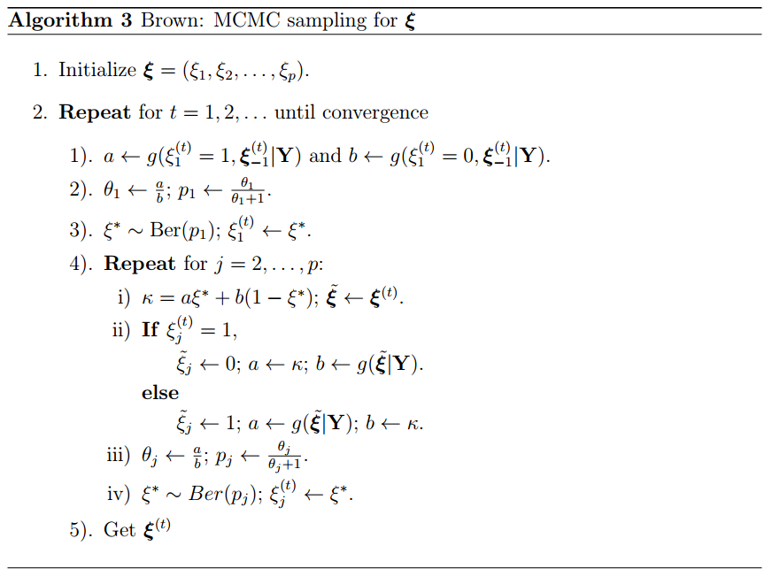

Chapter 2 Brown
Consider a multivariate vairable regression model, \[{\bf Y}= {\bf X}{\bf B}+ {\bf E},\] where \({\bf Y}=({\bf y}_1,{\bf y}_2,\ldots,{\bf y}_n)^{{\top}}\) is the \(n \times q\) response matrix, \({\bf X}= ({\bf x}_1,\ldots,{\bf x}_p)\) is the \(n\times p\) design matrix, \({\bf B}= ({\boldsymbol \beta}_1,\ldots,{\boldsymbol \beta}_p)^{{\top}}\) is a \(p\times q\) unknown coefficient matrix, and \({\bf E}= ({\bf e}_1,{\bf e}_2,\ldots,{\bf e}_n)^{{\top}}\) is an \(n\times q\) error matrix with \({\bf e}_i \overset{i.i.d}{\sim}\mathcal{N}_q({\bf 0}, {\boldsymbol \Sigma})\). To identify the variables selected among \(p\) regressors, (Brown and Vannucci 1998) introduced a latent binary vector \({\boldsymbol \xi}= (\xi_1,\ldots, \xi_p)^{{\top}}\) with \[\begin{eqnarray*} \xi_j=\begin{cases} 1 \quad & \text{ if ${\boldsymbol \beta}_j$ is active} \\0 \quad & \text{ if ${\boldsymbol \beta}_j$ is not active} \end{cases}. \end{eqnarray*}\] The conjugate priors are considered as follows: \[\begin{eqnarray*} && \pi({\bf B}_{{\boldsymbol \xi}}|{\boldsymbol \Sigma},{\boldsymbol \xi}) \sim \mathcal{MN}({\bf 0},{\bf H}_{{\boldsymbol \xi}}, {\boldsymbol \Sigma})\\ && \pi({\boldsymbol \Sigma}) \sim \mathcal{IW}({\bf Q},\delta)\\ && \pi({\boldsymbol \xi}) \overset{ind}{\sim} \prod_{j=1}^{p} \text{Ber}(\omega_j), \end{eqnarray*}\] where \({\bf Q}\), \({\bf H}_{{\boldsymbol \xi}}\) and \(\delta\) are hyperparameters. Then, by Bayesian theorem, the marginal posterior distribution can be obtained by \[\begin{eqnarray*} &&m({\boldsymbol \xi}|{\bf Y}) \propto m({\bf Y}|{\boldsymbol \xi})\pi({\boldsymbol \xi})\\ &=&\iint f({\bf Y}|{\bf B}_{{\boldsymbol \xi}},{\boldsymbol \Sigma})\pi({\bf B}_{{\boldsymbol \xi}}|{\boldsymbol \Sigma}, {\boldsymbol \xi}) \pi({\boldsymbol \Sigma}) d{\bf B}d{\boldsymbol \Sigma}\pi({\boldsymbol \xi})\\ &=&\iint (2\pi)^{-\frac{nq}{2}}|{\boldsymbol \Sigma}|^{-\frac{n}{2}}\exp \left[-\frac{1}{2}{\text tr}\{({\bf Y}-{\bf X}_{{\boldsymbol \xi}}{\bf B}_{{\boldsymbol \xi}})^{{\top}}({\bf Y}-{\bf X}_{{\boldsymbol \xi}}{\bf B}_{{\boldsymbol \xi}})\}{\boldsymbol \Sigma}^{-1} \right]\times\\ &&(2\pi)^{-\frac{|{\boldsymbol \xi}| q}{2}}|{\boldsymbol \Sigma}|^{-\frac{|{\boldsymbol \xi}|}{2}} {|{\bf H}_{{\boldsymbol \xi}}}|^{-\frac{q}{2}}\exp \left[\frac{1}{2}{\text tr}\{{\bf B}_{{\boldsymbol \xi}}^{{\top}}{\bf H}_{{\boldsymbol \xi}}^{-1}{\bf B}_{{\boldsymbol \xi}}{\boldsymbol \Sigma}^{-1} \} \right] \times \\ && |{\bf Q}|^{\frac{\delta}{2}}2^{-\frac{1}{2}\delta q}{\boldsymbol \xi}_q^{-1}(\frac{\delta}{2}) |{\boldsymbol \Sigma}|^{-\frac{\delta + q + 1}{2}}\exp\{-\frac{1}{2}{\text tr}({\bf Q}{\boldsymbol \Sigma}^{-1}) \}d{\bf B}_{{\boldsymbol \xi}} d{\boldsymbol \Sigma}\pi({\boldsymbol \xi})\\ &\propto& (2\pi)^{-\frac{|{\boldsymbol \xi}| q}{2}}{|{\bf H}_{{\boldsymbol \xi}}|}^{-\frac{q}{2}}\iint |{\boldsymbol \Sigma}|^{-\frac{1}{2}(n+|{\boldsymbol \xi}|+\delta+q+1)}\exp\{-\frac{1}{2}{\text tr}({\bf Q}{\boldsymbol \Sigma}^{-1}) \} \\ &&\exp\left[-\frac{1}{2}{\text tr}\left\{\left({\bf B}_{{\boldsymbol \xi}}^{{\top}}({\bf X}_{{\boldsymbol \xi}}^{{\top}}{\bf X}_{{\boldsymbol \xi}}+{\bf H}_{{\boldsymbol \xi}}^{-1}){\bf B}_{{\boldsymbol \xi}}-2{\bf B}_{{\boldsymbol \xi}}^{{\top}}{\bf X}_{{\boldsymbol \xi}}^{{\top}}{\bf Y}\right){\boldsymbol \Sigma}^{-1}\right\}\right]\times \\ &&\exp\left[-\frac{1}{2}{\text tr}\left\{{\bf Y}^{{\top}}{\bf Y}{\boldsymbol \Sigma}^{-1} \right\} \right]d{\bf B}_{{\boldsymbol \xi}} d{\boldsymbol \Sigma}\pi({\boldsymbol \xi})\\ &=& (2\pi)^{-\frac{|{\boldsymbol \xi}| q}{2}}{|{\bf H}_{{\boldsymbol \xi}}|}^{-\frac{q}{2}}\iint |{\boldsymbol \Sigma}|^{-\frac{1}{2}(n+|{\boldsymbol \xi}|+\delta+q+1)}\exp\{-\frac{1}{2}{\text tr}[({\bf Y}^{{\top}}{\bf Y}+{\bf Q}){\boldsymbol \Sigma}^{-1}]\}\times \\ &&\exp\left[-\frac{1}{2}{\text tr}\left\{\left({\bf B}_{{\boldsymbol \xi}}^{{\top}}{\bf K}_{{\boldsymbol \xi}}{\bf B}_{{\boldsymbol \xi}}-2{\bf B}_{{\boldsymbol \xi}}^{{\top}}{\bf K}_{{\boldsymbol \xi}}{\bf K}_{{\boldsymbol \xi}}^{-1}{\bf X}_{{\boldsymbol \xi}}^{{\top}}{\bf Y}\right){\boldsymbol \Sigma}^{-1}\right\}\right]d{\bf B}_{{\boldsymbol \xi}} d{\boldsymbol \Sigma}\pi({\boldsymbol \xi})\\ &=& (2\pi)^{-\frac{|{\boldsymbol \xi}| q}{2}}{|{\bf H}_{{\boldsymbol \xi}}|}^{-\frac{q}{2}}\iint |{\boldsymbol \Sigma}|^{-\frac{1}{2}(n+|{\boldsymbol \xi}|+\delta+q+1)}\times\\ &&\exp\{-\frac{1}{2}{\text tr}[({\bf Y}^{{\top}}{\bf Y}-\tilde{{\bf B}}_{{\boldsymbol \xi}}^{{\top}}{\bf K}_{{\boldsymbol \xi}}\tilde{{\bf B}}_{{\boldsymbol \xi}} +{\bf Q}){\boldsymbol \Sigma}^{-1}]\}\times \\ &&\exp\left[-\frac{1}{2}{\text tr}\left\{\left( ({\bf B}_{{\boldsymbol \xi}} - \tilde{{\bf B}}_{{\boldsymbol \xi}})^{{\top}} {\bf K}_{{\boldsymbol \xi}}({\bf B}_{{\boldsymbol \xi}} - \tilde{{\bf B}}_{{\boldsymbol \xi}})\right){\boldsymbol \Sigma}^{-1}\right\}\right]d{\bf B}_{{\boldsymbol \xi}} d{\boldsymbol \Sigma}\pi({\boldsymbol \xi})\\ &=& (2\pi)^{-\frac{|{\boldsymbol \xi}| q}{2}}{|{\bf H}_{{\boldsymbol \xi}}|}^{-\frac{q}{2}} (2\pi)^{\frac{|{\boldsymbol \xi}| q}{2}} |{\bf K}_{{\boldsymbol \xi}}|^{-\frac{q}{2}} \times \\ &&\int |{\boldsymbol \Sigma}|^{\frac{|{\boldsymbol \xi}|}{2}} |{\boldsymbol \Sigma}|^{-\frac{1}{2}(n+|{\boldsymbol \xi}|+\delta+q+1)}\exp\{-\frac{1}{2}{\text tr}[({\bf Y}^{{\top}}{\bf Y}-\tilde{{\bf B}}_{{\boldsymbol \xi}}^{{\top}}{\bf K}_{{\boldsymbol \xi}}\tilde{{\bf B}}_{{\boldsymbol \xi}} +{\bf Q}){\boldsymbol \Sigma}^{-1}]\} d{\boldsymbol \Sigma}\pi({\boldsymbol \xi})\\ &=& {|{\bf H}_{{\boldsymbol \xi}}|}^{-\frac{q}{2}} |{\bf K}_{{\boldsymbol \xi}}|^{-\frac{q}{2}} \int |{\boldsymbol \Sigma}|^{-\frac{1}{2}(n+\delta+q+1)}\times\\ &&\exp\{-\frac{1}{2}{\text tr}[({\bf Y}^{{\top}}{\bf Y}-{\bf Y}^{{\top}}{\bf X}_{{\boldsymbol \xi}}{\bf K}_{{\boldsymbol \xi}}^{-1}{\bf X}_{{\boldsymbol \xi}}^{{\top}}{\bf Y}+{\bf Q}){\boldsymbol \Sigma}^{-1}]\} d{\boldsymbol \Sigma}\pi({\boldsymbol \xi})\\ &=& {|{\bf H}_{{\boldsymbol \xi}}{\bf K}_{{\boldsymbol \xi}}|}^{-\frac{q}{2}} \int |{\boldsymbol \Sigma}|^{-\frac{1}{2}(n+\delta+q+1)}\exp\{-\frac{1}{2}{\text tr}[({\bf Y}^{{\top}}({\bf I}_n - {\bf X}_{{\boldsymbol \xi}}{\bf K}_{{\boldsymbol \xi}}^{-1}{\bf X}_{{\boldsymbol \xi}}^{{\top}}){\bf Y}+{\bf Q}){\boldsymbol \Sigma}^{-1}]\} d{\boldsymbol \Sigma}\pi({\boldsymbol \xi})\\ &\propto& {|{\bf H}_{{\boldsymbol \xi}}{\bf K}_{{\boldsymbol \xi}}|}^{-\frac{q}{2}}|{\bf Y}^{{\top}}({\bf I}_n - {\bf X}_{{\boldsymbol \xi}}{\bf K}_{{\boldsymbol \xi}}^{-1}{\bf X}_{{\boldsymbol \xi}}^{{\top}}){\bf Y}+{\bf Q}|^{-\frac{n+\delta}{2}} \pi({\boldsymbol \xi})\\ &\equiv&g({\boldsymbol \xi}|{\bf Y}), \tag{2.1} \end{eqnarray*}\] where \({\bf K}_{{\boldsymbol \xi}} = {\bf X}_{{\boldsymbol \xi}}^{{\top}}{\bf X}_{{\boldsymbol \xi}}+{\bf H}_{{\boldsymbol \xi}}^{-1}\) and \(g({\boldsymbol \xi}|{\bf Y})\) is the proportional form of \(\pi({\boldsymbol \xi}|{\bf Y})\). (Brown and Vannucci 1998) set \({\bf Q}= k{\bf I}_q\) and \({\bf H}_{{\boldsymbol \xi}} = c({\bf X}_{{\boldsymbol \xi}}^{{\top}}{\bf X}_{{\boldsymbol \xi}})^{-1}\) and \(\omega_j = \omega\), then \(\pi({\boldsymbol \xi}) = \prod_{j=1}^{p}\omega_j^{\xi_j}(1-\omega_j)^{1-\xi_j} = \omega^{|{\boldsymbol \xi}|}(1-\omega)^{p-|{\boldsymbol \xi}|}\). Apply \({\bf Q}= k{\bf I}_q\) and \({\bf H}_{{\boldsymbol \xi}} = c({\bf X}_{{\boldsymbol \xi}}^{{\top}}{\bf X}_{{\boldsymbol \xi}})^{-1}\) into (2.1), hence we have \[\begin{eqnarray*} \log g({\boldsymbol \xi}|{\bf Y}) &=& -\frac{n+\delta}{2}\log|k{\bf I}_{q} + {\bf Y}^{{\top}}{\bf Y}- \frac{c}{c+1}{\bf Y}^{{\top}}{\bf X}_{{\boldsymbol \xi}}({\bf X}_{{\boldsymbol \xi}}^{{\top}}{\bf X}_{{\boldsymbol \xi}}^{-1}){\bf X}_{{\boldsymbol \xi}}^{{\top}}{\bf Y}|-\\ &&\frac{q|{\boldsymbol \xi}|}{2}\log(c+1)+ |{\boldsymbol \xi}|\log\omega+(p-|{\boldsymbol \xi}|)\log(1-\omega). \end{eqnarray*}\] Exhaustive computation of \(g({\boldsymbol \xi}|{\bf Y})\) for \(2^p\) values of \({\boldsymbol \xi}\) becomes prohibitive even in a super computer when \(p\) is larger than 40. In this circumstances, using MCMC sampling to explore marginal posterior is possible. (Brown and Vannucci 1998) use Gibbs sampler to generate each \({\boldsymbol \xi}\) value component-wise from full conditional distributions \(\pi(\xi_j|{\boldsymbol \xi}_{-j},{\bf Y})\), where \({\boldsymbol \xi}_{-j} = {\boldsymbol \xi}\setminus {\xi_j}\) . It is easy to show that \[\begin{eqnarray*} \pi(\xi_j = 1|{\boldsymbol \xi}_{-j},{\bf Y}) = \frac{\theta_j}{\theta_j+1}, \end{eqnarray*}\] where \[\begin{eqnarray*} \theta_j = \frac{g(\xi_j = 1, {\boldsymbol \xi}_{-j}|{\bf Y})}{g(\xi_j = 0, {\boldsymbol \xi}_{-j}|{\bf Y})}. \end{eqnarray*}\] The complete algorithm of (Brown and Vannucci 1998) is described in Algorithm 3:

For the hyperparameter, we follow the same setting with (Brown and Vannucci 1998), which are \(\delta = 2+q, \omega = 20/p, k = 2\) and $ c = 10$. Note that since our definition of inverse-wishart distribution is different from that of (Brown and Vannucci 1998), the values of \(q\) and \(k\) we set here are after adjustment to make them consistent with (Brown and Vannucci 1998).
References
Brown, P. J., and M. Vannucci. 1998. “Multivariate Bayesian Variable Selection and Prediction.” Journal of the Royal Statistical Society: Series B (Methodological), 627–41.